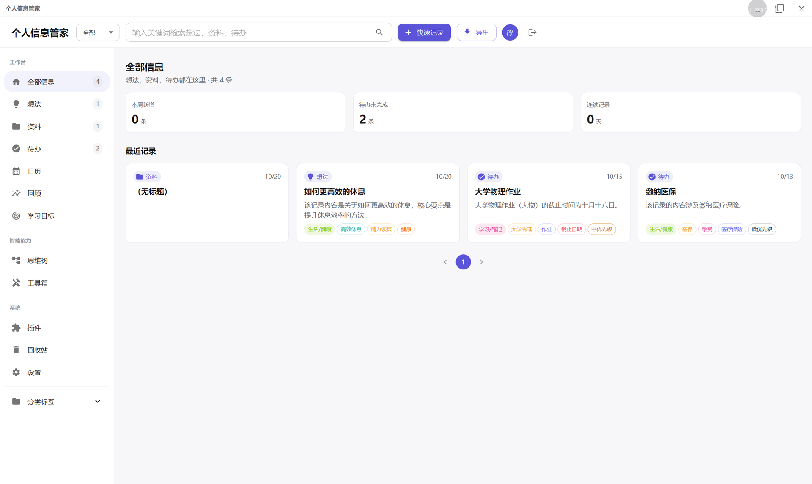
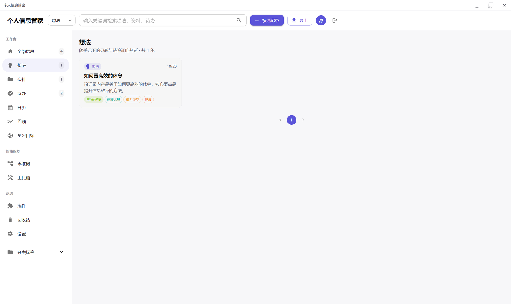
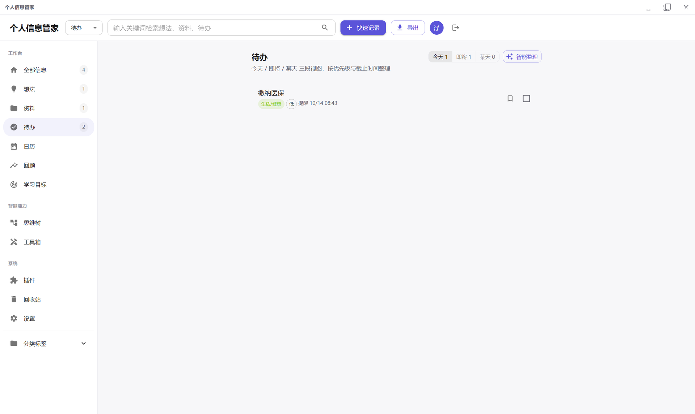
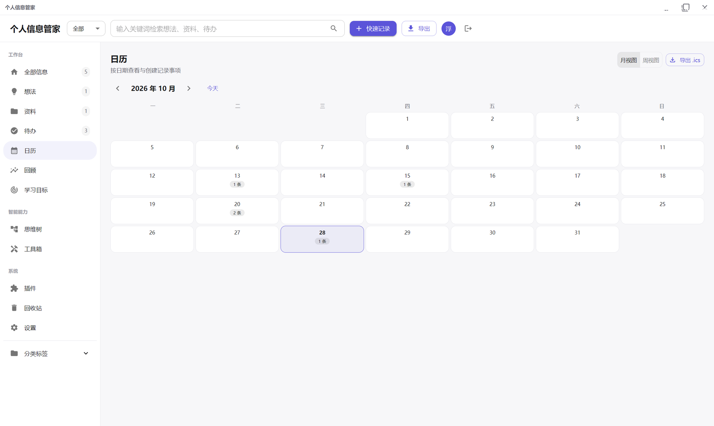
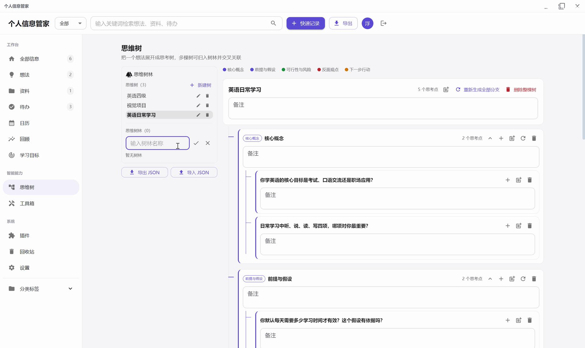
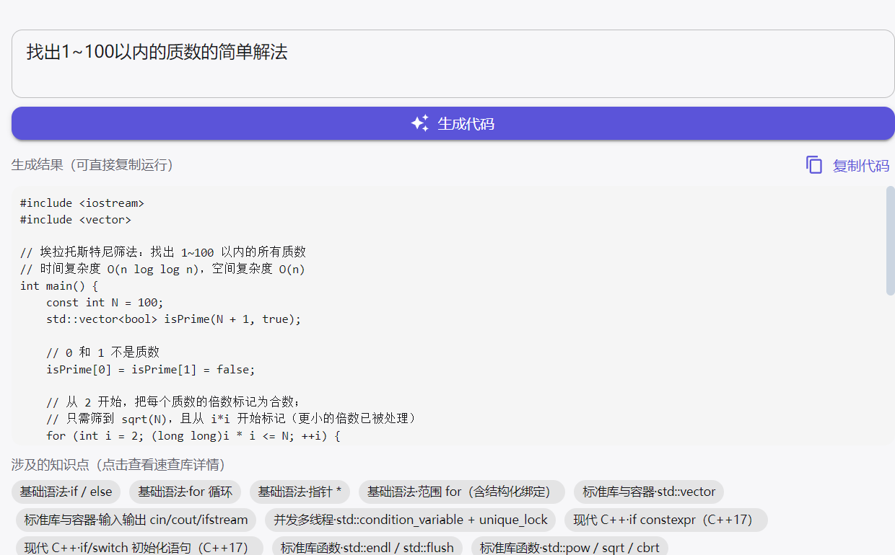
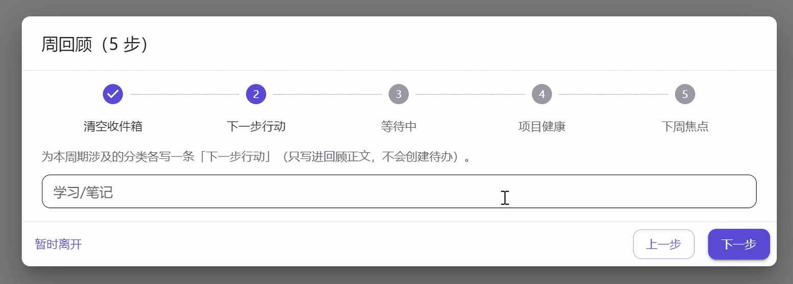
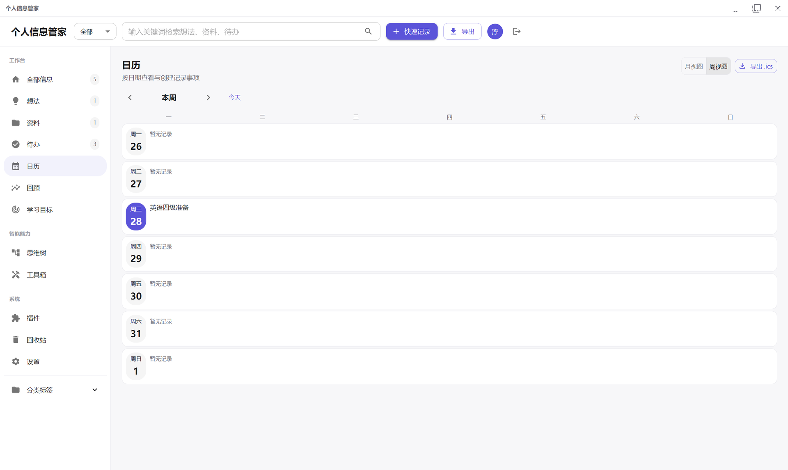
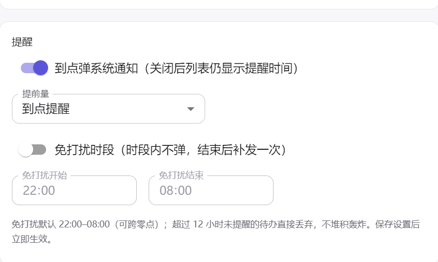

三个入口，都不打断你
全局快捷键一按，记录框直接盖在当前窗口上；也可以缩在桌面角落的悬浮窗里；截图截完点「标记并共享」，图就进库了。手不离键盘，想法不落地。
想法、资料、待办，随手丢进来。它替你归类、拆解、串成一条线；每天早上，把今天该动的两三步摆在最前面。一个长在你自己电脑里的管家，不订阅，不训练，也不替你决定。

没有旁白，也没有功能列表。 就是一天里它替你做的三件事：把东西收进来，把话拆开，把该动的那一步摆到今天。
记录最难的是「开始记」那一下。所以这里没有必填项：一句话、一张截图、一个说到一半的念头，都能先扔进来。分类、打标签、定时间，都是它事后补的。



全局快捷键一按，记录框直接盖在当前窗口上；也可以缩在桌面角落的悬浮窗里；截图截完点「标记并共享」，图就进库了。手不离键盘，想法不落地。
想法等发酵，资料等查，待办等做，日历等那天来。同一条记录可以既是资料又是待办——先收下，之后随时改，不用在记的那一刻就想明白它是什么。
标题、正文、标签一起搜，几个词一起丢进去时，只返回同时含这些词的那几条，不会被无关结果冲淡。标签不用提前建，用着用着它自己就长出来了。
没有人会在记第一条笔记之前先建一套分类法。这里也一样：先记，它按内容给建议标签，你顺手删改两个，几十条之后，一套属于你的分类自然浮出来。
不是预置的模板，是你自己用出来的词。
点任意一个标签，就只剩这一类的记录。
你写下的东西多半是碎的。它的活儿是把碎片理成能拽住的一根：这条算什么、这件事下一步在哪、三个月前是不是也想过同一个问题。

核心概念、前提与假设、可行性与风险、反面观点、下一步行动。五个角度各长出两个追问，每个追问底下都留着写备注的位置。想不清楚一件事的时候，先把它种成一棵树。
一条记录存下之后，它补上类型、标签和一句话摘要。分析模型可以在「快」和「准」之间选：切到速度优先，记完立刻能看到结果；切回质量优先，摘要更细但要多等几秒。
不用回忆当时的原句，把记得的几个词一起丢进去，它只返回同时含这些词的那几条。标题、正文、标签全参与匹配——记不住的细节，让字替你记。
工具箱里有代码生成、C#／C++ 速查库、报错解释和截图识别。写代码卡住的地方，和记事卡住的地方，走的是同一套动作：先把问题拆小，再一个个补上。
比如「找出 1~100 以内的质数」——它给代码，也把用到的语法点摊开在下面：基础语法、循环、std::vector、constexpr 常量。点哪条，就跳去查哪条。
代码分析默认关闭。关着的时候，桌面端不读取、不上传你的源码；想用再打开。

待办不按项目排，按「今天做不做」排。今天、即将、某天，三段就够；剩下的交给到点提醒、免打扰，和周末那一次收尾。

不用给每件事排日期。先分清「今天动不动它」，排不上的丢进「某天」——它不会消失，也不会在早上吵你。三段切换一次点击，看今天的清单不会超过一屏。
到点弹系统通知，关掉提示也仍在列表里显示时间。免打扰可以设成 22:00–08:00：时段内不弹，错过的那条结束后补发一次，不会攒成一串半夜跳出来。
周回顾五步：清空收件箱 → 下一步行动 → 等待中 → 项目健康 → 下周焦点。走完生成一份属于你的周报，只写进回顾正文。重复的事设成循环任务，按到期或按完成复现，不用每周重记。

月视图看密度：哪几天记得多、哪几天是空的，一眼就知道这周的节奏。周视图看安排，今天那一格会亮起来。
网页版适合临时打开；桌面版多了几个只有本机才能做的事。登录同一个账号，两边看到的是同一批记录。
没有「上传到我们的服务器训练模型」这一步。你写的东西归你，能带走，也能删干净。
